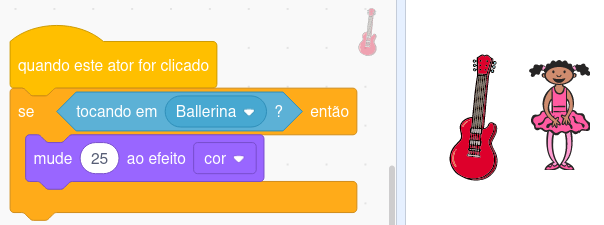

Condicionais são estruturas de programação que alteram o fluxo de execução de um algoritmo. Eles permitem que um trecho do código seja executado somente quando uma determinada condição é verdadeira.
No caso do Scratch, existem 2 blocos de condicionais:
O primeiro bloco permite ao programador definir um conjunto de blocos que serão executados se e somente se a condição seja verdadeira.
Então, na figura a seguir, os blocos colocados na área azul são executados antes de testarmos a condição (de cor verde). Caso essa condição seja verdadeira, os blocos dentro da área de cor rosa serão executados. Depois de terminar a execução de todos esses blocos, finalmente são executados os blocos de cor roxa.
O segundo bloco permite ao programador definir um conjunto de blocos que serão executados se e somente a condição seja verdadeira e um outro conjunto que serão executados se e somente a condição for falsa.
O funcionamento deste segundo bloco é muito parecido com o bloco anterior. A maior diferença é que o bloco condicional agora possui duas áreas internas. A primeira (de cor rosa) funciona exatamente da mesma maneira, já a segunda área (de cor laranja) que não existia no bloco anterior será executada se e somente se a condição (cor verde) for falsa.
No exemplo a seguir, podemos ver o que acontece quando clicamos na guitarra e ela está tocando a Bailarina.
Se a guitarra não está tocando a Bailarina, ela simplesmente não faz nada.
Mas e se quisermos que ela faça algo se ela for clicada e não estiver tocando na Bailarina? Nesse caso, precisaremos utilizar o segundo bloco condicional e o nosso algoritmo ficará dessa maneira.
Agora, vamos fazer uns exercícios. Entre neste link e responda às perguntas: https://forms.office.com/r/RrcPwjmkmv.